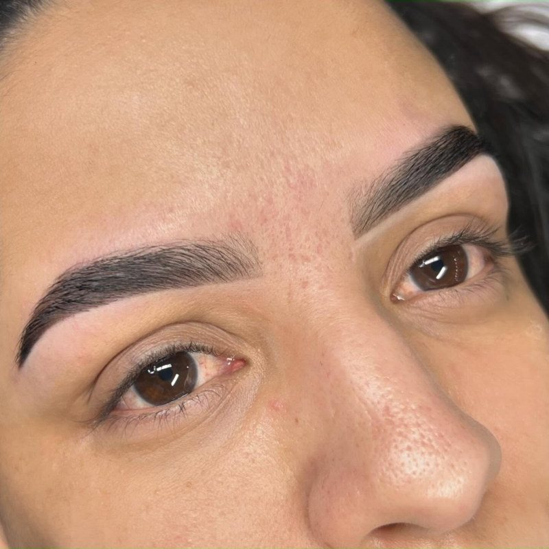
SobrancelhasDesign com henna
Alinhamento na régua, tonalidade certa e aplicação precisa. Inclui henna degradê, que também valoriza quem é loira.
Quero agendarGovernador Valadares · MG
Design, Brow Lamination, micropigmentação e remoção a laser em um atendimento individual, pensado para o seu rosto, o seu estilo e a sua autoestima.
Katia MorenoBiomédica Esteta
Especialidades
Não existe molde ou padrão. Cada procedimento começa por uma avaliação do seu rosto, dos seus fios e do resultado que você quer ver no espelho.

Alinhamento na régua, tonalidade certa e aplicação precisa. Inclui henna degradê, que também valoriza quem é loira.
Quero agendar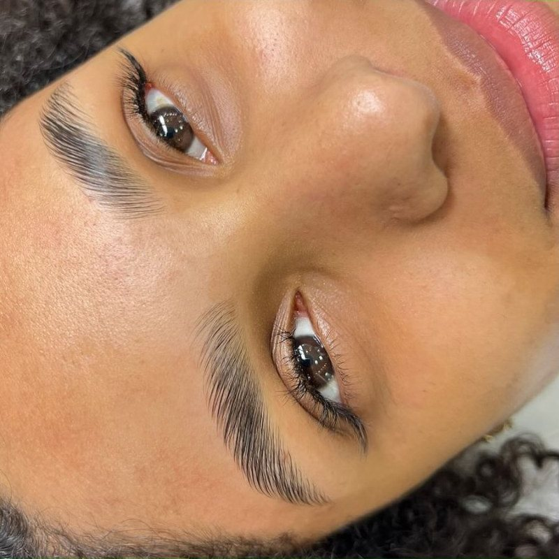
Realinha fios rebeldes, disfarça falhas e redemoinhos e cria efeito lifting. Sobrancelhas mais cheias e volumosas, sem maquiagem.
Quero agendar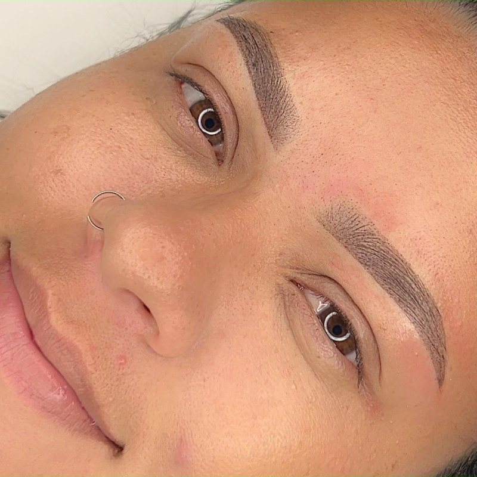
Sombreado suave, com a naturalidade de uma sobrancelha levemente maquiada, respeitando o seu formato e a sua cor.
Quero agendar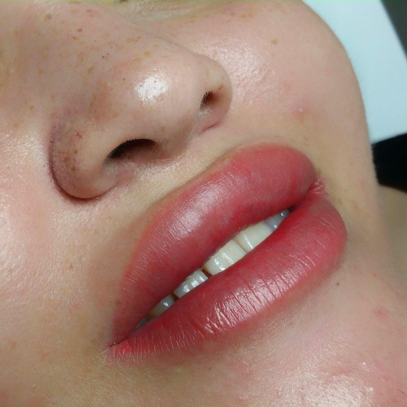
Revitalização para devolver cor e aspecto saudável, e neutralização para clarear lábios amarronzados ou arroxeados.
Quero agendar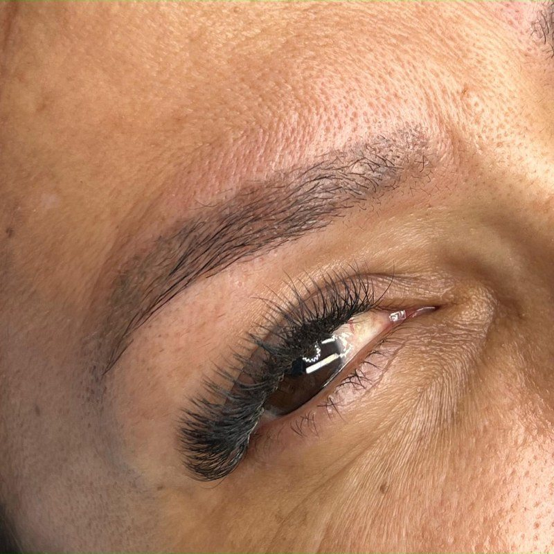
Protocolo completo para remover micropigmentação antiga, preservando a pele e os fios. Depois, você pode refazer com o design certo.
Quero agendar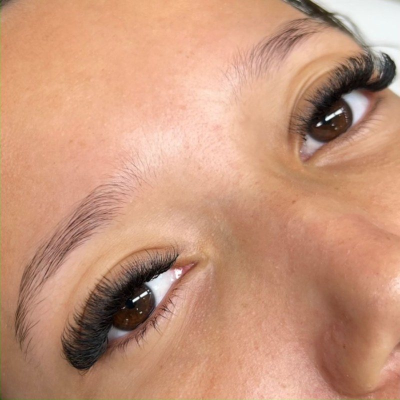
Reconstrução de fios naturais com microagulhamento e ativos bioestimuladores, para recuperar a densidade e fortalecer as sobrancelhas.
Quero agendarResultados
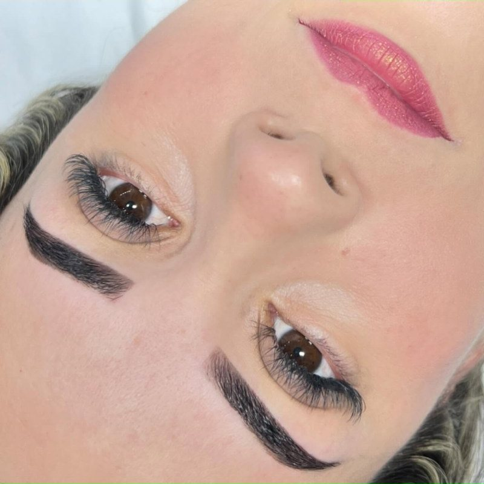
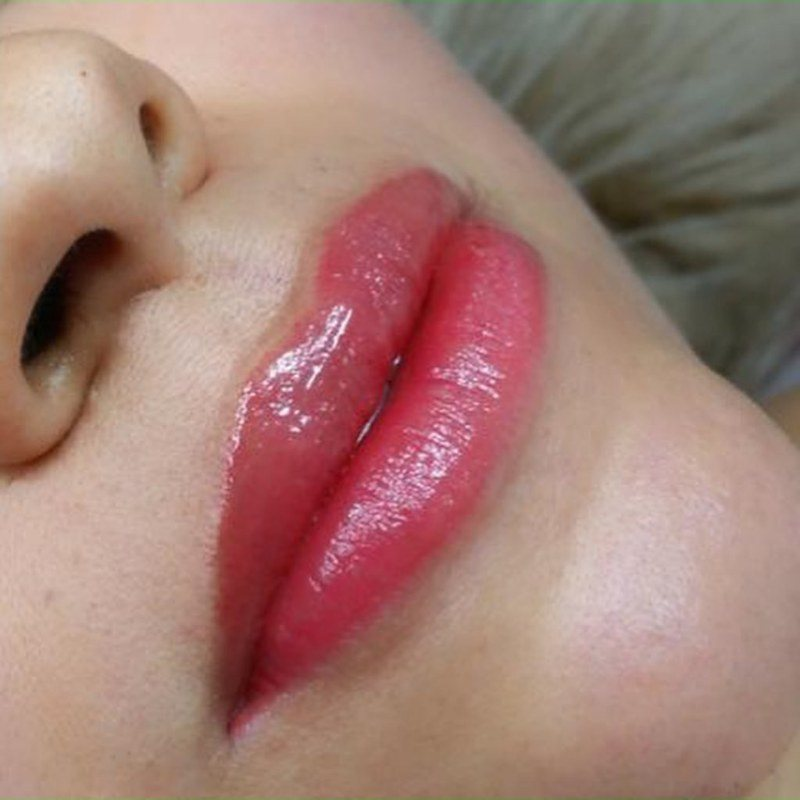
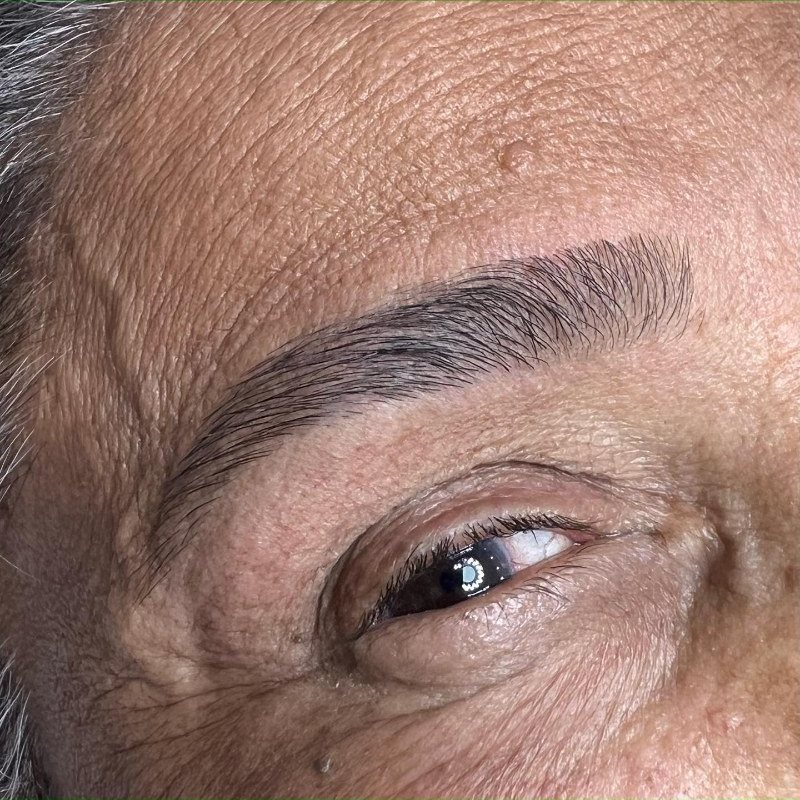
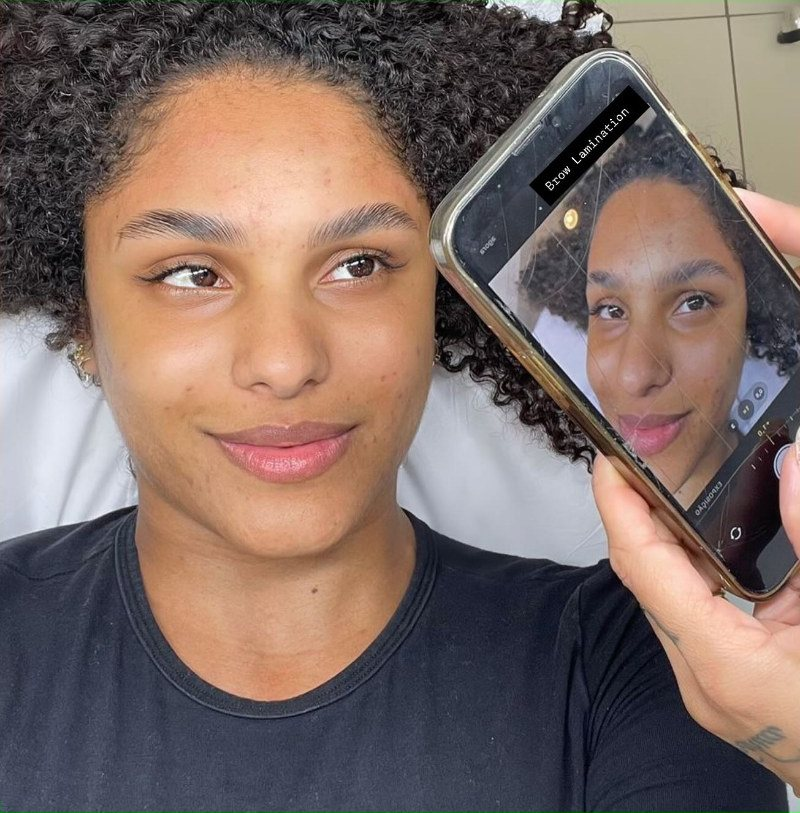
Fotos do atendimento de Katia Moreno. Cada resultado depende da avaliação individual. Veja mais no Instagram.
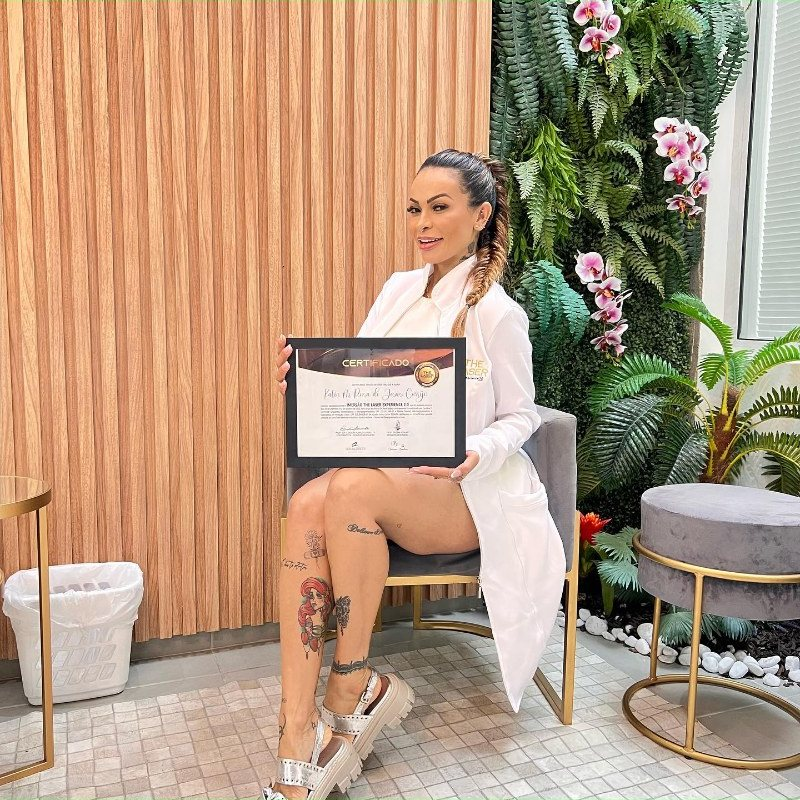
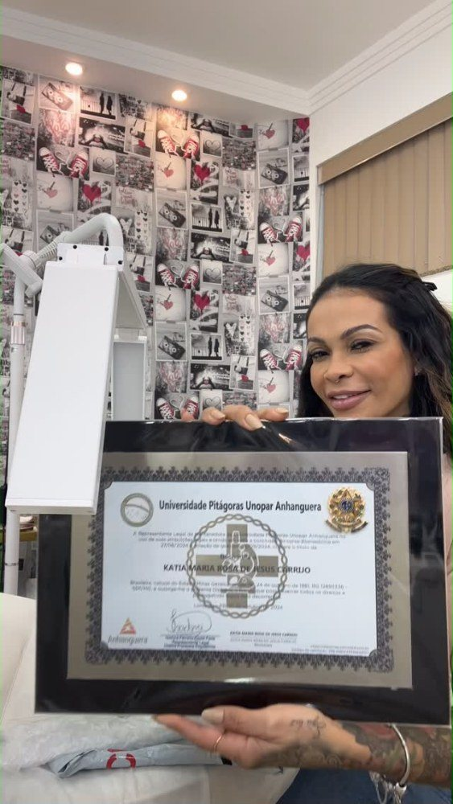
Sobre
Expert em design de sobrancelhas e em remoção a laser, micropigmentadora de sobrancelhas e lábios e biomédica. Katia une a técnica do ateliê ao conhecimento da biomedicina para entregar o que a estética de hoje mais pede: naturalidade.
Ela busca o melhor fora de casa para oferecer em Governador Valadares:
“A minha melhor obra de arte é ver o sorriso no rosto de cada cliente.”Katia Moreno
Como funciona
Você chama no WhatsApp, conta o que deseja e escolhe o melhor horário.
Katia analisa o seu rosto, os seus fios e a sua pele, e indica a técnica ideal.
Atendimento individual, com hora marcada, feito com calma e precisão.
Você sai com as orientações de pós-procedimento para o resultado durar mais.
Dúvidas frequentes
É indicada para quem tem fios rebeldes, que crescem em direções diferentes, falhas ou redemoinho no final da sobrancelha, e para quem quer efeito de sobrancelhas mais cheias sem maquiagem.
Sim. A despigmentação a laser remove o pigmento antigo com um protocolo que cuida da pele e dos fios. O número de sessões é definido na avaliação.
Pode. Depois da remoção, um novo procedimento é planejado respeitando o seu estilo, o design e a cor que combinam com você.
O método associa microagulhamento e ativos bioestimuladores para recuperar a densidade e fortalecer os fios naturais. A indicação é confirmada na avaliação.
O agendamento e os valores são passados direto pelo WhatsApp (33) 99159-1024. O atendimento é com hora marcada.
Contato
Chame no WhatsApp, tire suas dúvidas e garanta o seu horário com a Katia.